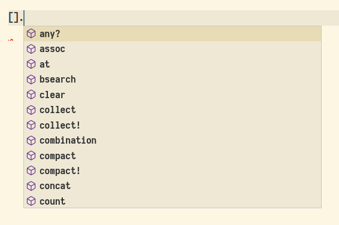
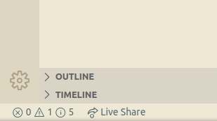

## Autocomplete and Linting for Ruby in VSCode
## Autocomplete A feature that predicts what the user is going to type based on what was already typed. 
## Linting Tool that analyzes source code and detects errors, bugs and style errors. 
## Style Guide A manual that stablishes writing conventions.
## Installation - Gems (1/2) Solargraph - [solargraph.org](https://solargraph.org) Rubocop - [docs.rubocop.org](https://docs.rubocop.org) RuboCop Airbnb - [github.com/airbnb/ruby/tree/master/rubocop-airbnb](https://github.com/airbnb/ruby/tree/master/rubocop-airbnb) <pre><code data-trim data-noescape class="bash"> gem install solargraph rubocop-airbnb </code></pre>
## Installation - VSCode (2/2) [Ruby](https://marketplace.visualstudio.com/items?itemName=rebornix.Ruby) [Ruby Solargraph](https://marketplace.visualstudio.com/items?itemName=castwide.solargraph)
## Configure VSCode
#### settings.json ```json "ruby.intellisense": "rubyLocate", "ruby.interpreter.commandPath": "/home/<username>/.rbenv/shims/ruby", "ruby.useLanguageServer": true, "ruby.useBundler": true, "solargraph.commandPath": "/home/<username>/.rbenv/shims/solargraph", "solargraph.formatting": true, "solargraph.diagnostics": true, "[ruby]": { "editor.defaultFormatter": "castwide.solargraph" }, ```
## Live Demo Time